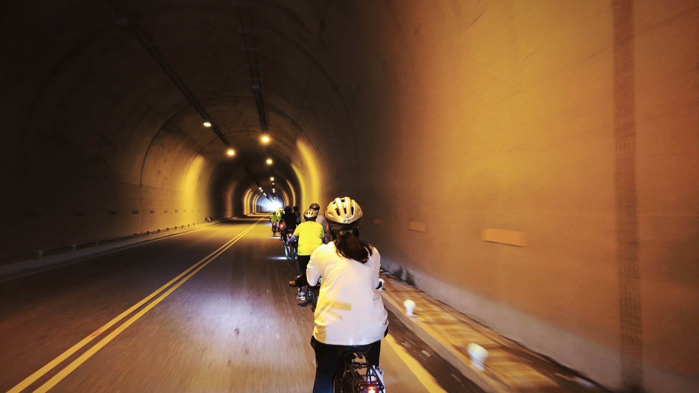
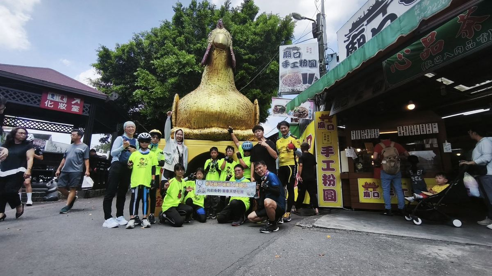
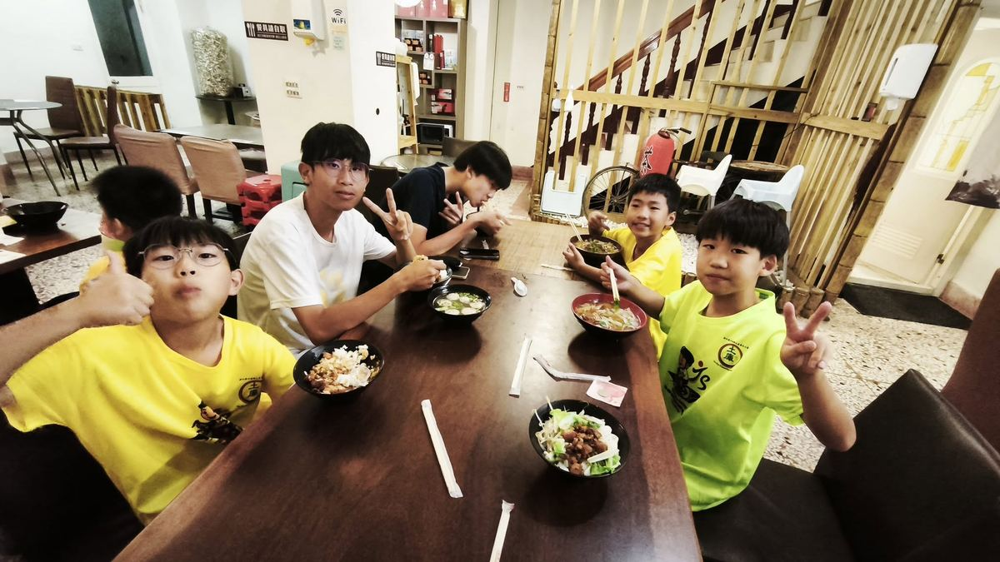
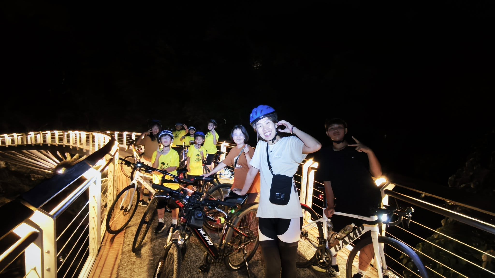

Before the summer cycling trip, this was the final team training ride of the semester — a fierce test of both body and spirit, and the most challenging gift Tuku's children have ever given themselves. Over the Dragon Boat Festival holiday (June 20–21), the principal led the fourth- to sixth-graders on an epic challenge: cycling from Zhutang all the way to Sun Moon Lake — a journey of nearly 80 kilometres, climbing hill after steep hill in heat pushing 40 degrees Celsius.
No one gave up. Every child arrived. Resilience has a face — and it looks just like them.
Watching the heat shimmering off the road ahead, these small bodies revealed a resilience far beyond imagination. No matter how tired they got, not one child gave up. By nightfall on the first day, every single one of them had arrived safely — proving their fearlessness through sweat.
What moved me most deeply was the next morning, when the children performed their ocarina at Shuishe Pier to raise travel funds. For many adults, this would feel shy and embarrassing — but these children stepped up with a brave, clear light in their eyes. The children lined up proudly and played "April望Rain" and "I'll Be There," their confidence and purity earning thunderous applause from travelers nearby. Braver than we think!
This incredible journey would not have ended so beautifully without the parents who accompanied us every step of the way. Thank you for driving alongside the steepest mountain roads, watching over our children's safety. Together, we make it possible! This irreplaceable perseverance and love will be the greatest foundation your children carry for the rest of their lives.



暑假單車環島出發前，學期中最終一次團練～這是一場體能與心智的魔鬼考驗，更是土庫囡仔送給自己最具挑戰的磨練。這次端午連假（6/20~6/21），校長帶領四到六年級的孩子，挑戰從竹塘騎行至日月潭——這是一段近80公里、陡坡連綿，且在體感溫度直逼 40 度熱浪下的艱難征途。
看著遠方路面散發滾滾熱氣，這群孩子小小的身軀卻展現了超乎想像的強大韌性(Resilience)。縱使累了，沒有人放棄，第一天在天黑前全數安全抵達，他們用汗水證明了自己的無所畏懼。
最讓我深深動容的，是隔天清晨孩子們在水社碼頭的街頭表演陶笛，為自己的環島之行籌措旅費。這對很多大人而言是羞怯與不好意思的舉動，但孩子們勇者無懼以無比清澈且勇敢的神情接下任務，這時，大人在他們面前就顯得渺小多了。孩子們大方站成一排，吹奏起《四月望雨》與《與你同在》，那份自信與純粹，贏得了現場旅人如雷的掌聲。Braver than we think!（孩子比我們想像得更勇敢！）那一刻，他們比任何大人都還要高大。
這趟驚奇的旅程能圓滿落幕，最感謝一路上用愛相隨的家長們。多虧您們在最陡峭危險的山路開車接駁，守護著孩子的安全；有您們的無私付出，才能成就這場完美的日月潭騎行。Together, we make it possible!（因為有您，我們共同創造奇蹟！）
感謝每一位了不起的土庫囡仔，感謝每一位默默支持的偉大家長。這份無可替代的「堅持」與「愛」，將是孩子一生最厚實的底氣。
Tap 🔊 to listen · 點喇叭聽發音
Resilience means never giving up.韌性就是永不放棄的精神。
A hard challenge makes us stronger.艱難的挑戰讓我們更強大。
The children are so brave and strong.這些孩子又勇敢又堅強。
They perform music at the pier.他們在碼頭表演音樂。
Their sweat shows how hard they worked.他們的汗水展現了有多努力。
Perseverance is the key to success.堅持是成功的關鍵。
Match the word to its meaning
把英文和中文配對
Matched 配對成功：0 / 6